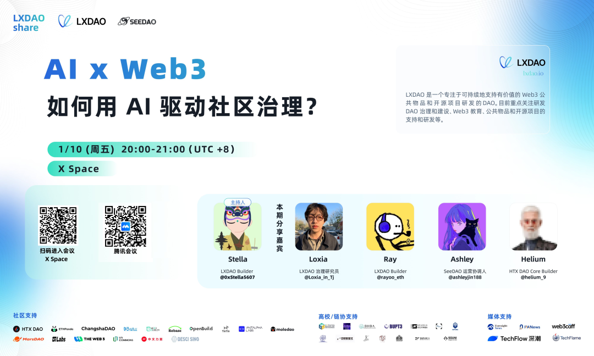

我们发现：AI 技术正在重塑 Web3 社区的治理方式，为去中心化社区带来更高的效率与公平性 ?!
想象通过 AI，社区可以自动化处理恒常的事务和管理任务，减少人的偏见与误差；可以实时分析和处理大量数据，帮助社区更好地做出决定等。
📅 时间：1月10日星期五，明天晚上八点（UTC+8）
LX DAO 与 SeeDAO 将一起探讨 AI 的潜力与挑战，洞见智能化、去中心化的未来！
🎤 主持人 & 分享嘉宾
- Stella | LXDAO Builder & SeeDAO Seed Holder
- Loxia | LXDAO 治理研究员
- Ray | LXDAO Builder
- Ashley | SeeDAO S9 社区运营
- Helium | HTX DAO Core Builder
